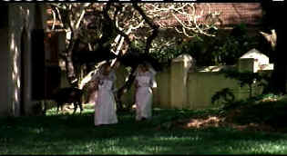

| Cotton Mary/C+,C+ |
| Universal/2000/124/ANA 1.85 |
Ismael Merchant, the producing partner of the Merchant/Ivory team, once again gets behind the camera for Cotton Mary, an old-fashioned, rather dour and unappealing drama of India in transition. Set in 1950's on India's Malabar Coast, Cotton Mary is a tale of transition in India's changing social order.
 |
| Mary leads the way. ©Universal |
When Lily Macintosh has a difficult time in child birth, nurse Cotton Mary
ingratiates herself and positively leeches to her bedside. The child is born very fragile and Lily
is not able to breast feed her. Mary takes charge, provides surreptitious breast feeding across the
river, and before you know it she has left the hospital and installed herself as the nurse in
Lily's household. Mary's sly and jealous nature comes tot he fore more and more. She disrupts the
relationships of the house and feeds off Lily's fear. In the meantime, Lily's husband shows
less of an interest in the problems of their delicate child than the rustle of the local skirts.
Mary's entry into the Macintosh household turns everything upside down.
Director Ismael Merchant plays it pretty close to the vest as a director,
eschewing any flashy style and letting the story stand by itself. Merchant does not make the most
of his settings, nor does the cinematic style embellish the film. Very slow-paced filmmaking wears
well when the material is stunning and fascinating. In the case of Cotton Mary, the main
character, who dominates most of the screen time, is not some one you will enjoy spending time
with.
The elegant Greta Scacchi looks rather frumpy as Lily Macintosh, the young
mother who comes under Mary's venomous spell. Madhur Jaffrey, who is credited as co-director on the
film, plays Cotton Mary with grand enthusiasm. She is as obnoxious as can be and when she
lets her malicious streak shine through, she's positively hateful.
The DVD transfer is sort of like Scacchi in this role: plain, efficient,
but not as exciting as you'd like. Merchant has filmed with a fairly grainy look and the overall
image lacks the punch one might expect from the subject matter. Scenes are not sharp enough to make
me happy. I almost felt like I was watching the movie in a second-tier art house. The Dolby Digital
2- Channel mix provides reasonable ambiance.

Selections from the Feature Archive
include articles on Akira Kurosawa, Frank
Darabont, Blonde Bimbos, Hollywood Street Gangs, or Vietnam: The
Hollywood Pariah, and many more....

Hail, Hail, the Gangs in Hollywood
From Angels with Dirty Faces to West Side Story to Menace II Society, Hollywood has depicted youth gangs as reflections of the times.

 Have you visited Home Theater
Talk lately? One of the friendliest places on the Net for Home Theater and DVD discussion, you
can get help for installation problems or simply share your opinions with other Vidiots.
Have you visited Home Theater
Talk lately? One of the friendliest places on the Net for Home Theater and DVD discussion, you
can get help for installation problems or simply share your opinions with other Vidiots.
 Gary Morris's insightful publication Bright Lights
Film Journal turns the celluloid in films from a unique perspective. Click on the image above
for more pure movie views.
Gary Morris's insightful publication Bright Lights
Film Journal turns the celluloid in films from a unique perspective. Click on the image above
for more pure movie views.

The DVD Forum is an international association of hardware
manufacturers, software firms and other users of Digital Versatile Discs (the "DVD
Format"), created for the purpose of exchanging and disseminating ideas and information about
the DVD Format and its technical capabilities, improvements and innovations
.
DVD
Demystified makes it all clear.The official Internet DVD FAQ for the rec.video.dvd
Usenet newsgroups.